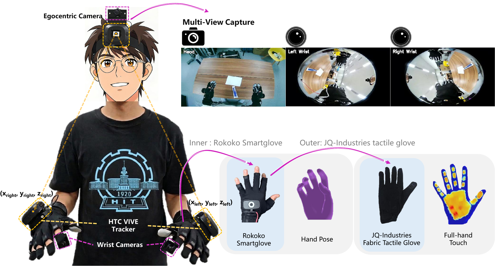
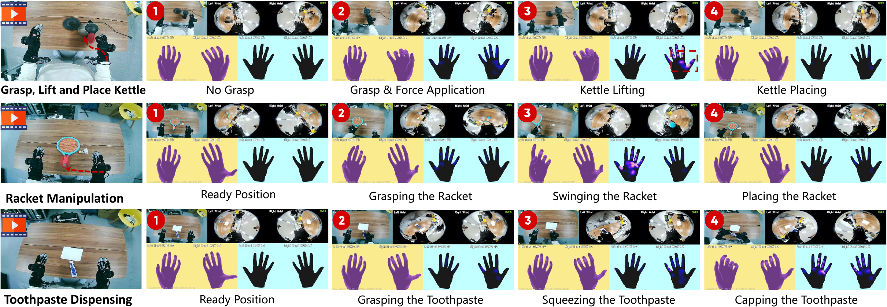
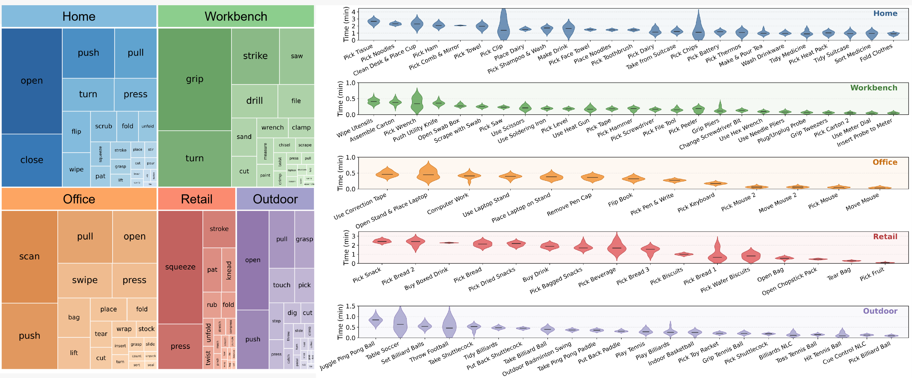
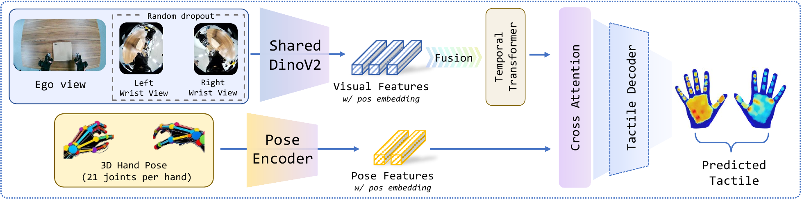
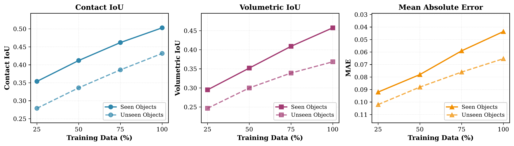
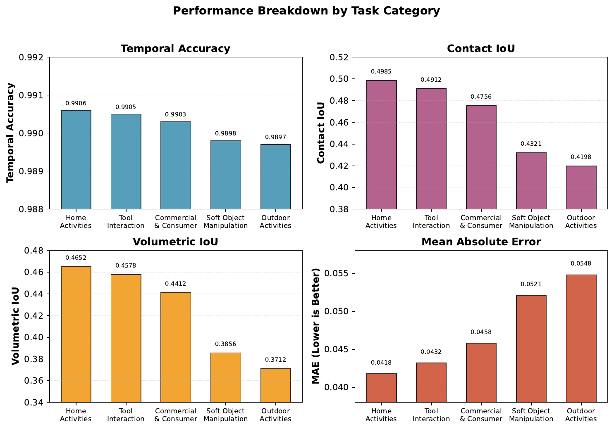
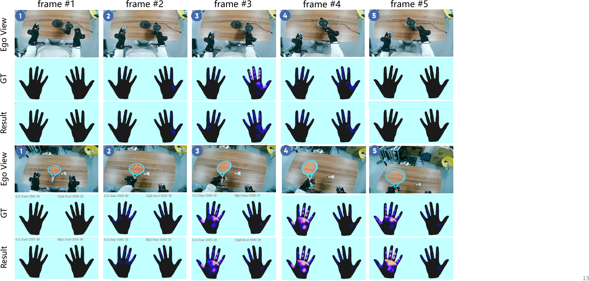

TouchAnything
The First Dataset and Framework for Bimanual Tactile Estimation from Egocentric Video
1Harbin Institute of Technology, Shenzhen
2Meituan Academy of Robotics
✉Corresponding author: shuoyang@hit.edu.cn
Overview
TouchAnything is the first large-scale multi-view tactile dataset for egocentric hand-object interaction, featuring 302 diverse manipulation tasks across 4,530 episodes in both indoor and outdoor environments. The dataset provides synchronized multi-view video (egocentric + dual wrist cameras), bimanual 3D hand pose (42 joints), and dense continuous pressure maps from wearable tactile sensors. By combining global scene context with wrist-level observations of hand-object contact, TouchAnything enables comprehensive modeling of tactile feedback under realistic occlusion and viewpoint variation.

Abstract
Vision has become the dominant sensing modality for hand-object interaction, yet it remains insufficient for dexterous manipulation as it cannot directly capture contact forces, pressure distributions, or subtle contact state changes. While tactile sensing provides these critical cues, high-quality tactile hardware is difficult to deploy at scale, motivating increasing interest in vision-to-touch prediction, which aims to infer tactile feedback from visual observations. However, progress in this area is fundamentally limited by the lack of large-scale, diverse, and high-fidelity datasets. Existing datasets are often small, restricted to single-view capture or narrow interaction scenarios, or lack dense tactile ground truth. In particular, egocentric single-view observations suffer from severe occlusion of hand-object contact regions, making accurate tactile inference highly challenging. To address these limitations, we introduce TouchAnything, a large-scale multi-view tactile dataset for egocentric hand-object interaction. TouchAnything contains 302 diverse manipulation tasks spanning 4,530 episodes across both indoor and outdoor environments, with synchronized multi-view observations (egocentric and dual wrist-mounted cameras), bimanual 3D hand pose annotations, and dense continuous pressure maps captured by wearable tactile sensors. This setup enables learning cross-view consistent representations of contact dynamics under realistic occlusion and interaction variability. Building upon this dataset, we establish a new benchmark for multi-view tactile prediction and propose a unified architecture that leverages a shared DINOv2 encoder, learnable view embeddings, cross-view attention, and a view dropout strategy to support flexible inference under varying view availability. Effectively leveraging multi-view observations is non-trivial due to view inconsistency and partial observability, which our design explicitly addresses. Extensive experiments demonstrate that incorporating complementary wrist views is critical for resolving occluded contact regions and enabling reliable tactile inference, particularly under severe occlusions, highlighting the importance of multi-view perception for tactile reasoning. We will publicly release the dataset, code, and benchmark to bridge the gap between visual perception and physical interaction in embodied systems.
Key Features
First dataset combining multi-view synchronized video (egocentric + dual wrist cameras) with real tactile pressure data
Real continuous pressure distributions from wearable sensors, capturing fine-grained contact dynamics
Bimanual manipulation with 42-joint 3D hand pose annotations, enabling analysis of coordinated hand-object interaction
Precise frame-level synchronization across video, pose, and pressure, enabling accurate temporal modeling of contact events
Dataset Statistics
Dataset Comparison
TouchAnything is the first dataset to jointly provide multi-view video, bimanual hand pose, and real dense pressure data across diverse scenes.
| Dataset | In-the-wild | Hand Pose | Contact | Wrist Views | Hands | Objects | Frames |
|---|---|---|---|---|---|---|---|
| GRAB | MoCap | Analytical | Biman. | 51 | 1.6M | ||
| ContactDB | Thermal | Biman. | 50 | 375k | |||
| ARCTIC | MoCap | Analytical | Biman. | 11 | 2.1M | ||
| OakInk | MoCap | Analytical | Single | 100 | 230k | ||
| DexYCB | Est. | Single | 20 | 582k | |||
| ActionSense | Glove | Pressure | Biman. | 21 | 521k | ||
| HOI4D | Est. | Single | 800 | 2.4M | |||
| EgoPressure | Est. | Pressure | Single | 31 | 4.3M | ||
| EgoDex | Est. | Analytical | Biman. | 500 | 90M | ||
| OpenTouch | Glove | Pressure | Single | 800 | ~500k | ||
| TouchAnything (Ours) | Glove | Pressure | Biman. | 302 | 2M |
Main Contributions
- First large-scale multi-view tactile dataset for egocentric hand-object interaction, comprising 302 tasks, 4,530 episodes, bimanual pose, and dense continuous pressure maps across diverse indoor and outdoor scenes
- First multi-view tactile prediction benchmark, including evaluation protocols that quantify the role of complementary wrist views and show clear gains under severe occlusion
- New multi-view tactile prediction architecture with shared vision encoding, cross-view attention, and view dropout, enabling flexible inference with any combination of available views
Data Collection Setup

Multi-sensor data collection system with head-mounted egocentric camera, dual wrist cameras, and pressure-sensing gloves.
Our data collection system integrates:
- Head-mounted Wide-Angle Camera: Captures global manipulation context from a wide-field first-person perspective
- Dual Wrist Cameras: Observe hand-object contact regions to overcome occlusion
- Pressure-Sensing Gloves: Record dense 16×16 pressure maps on each palm
- Motion Capture: Tracks 42-joint bimanual 3D hand pose at 30Hz
- Temporal Synchronization: All modalities aligned with millisecond precision
Example Multi-Modal Data

Example showing synchronized multi-view video, hand pose, and pressure maps revealing contact information invisible to vision alone.
Dataset Analysis

Comprehensive statistics showing diverse pressure patterns, balanced task coverage, and rich contact interactions.
Method Architecture

Multi-view tactile prediction architecture with shared vision encoding, cross-view attention, and pose-aware fusion.
We propose a multi-view tactile prediction model based on:
- Shared DINOv2 Vision Encoder: Extracts features from all camera views
- Learnable View Embeddings: Distinguishes between egocentric and wrist viewpoints
- Cross-View Transformer Attention: Fuses complementary information across views
- View Dropout Training: Enables robust inference with missing views
This design allows the model to work with any subset of available views at inference time, from ego-only to full multi-view, making it practical for real-world deployment.
Model Inference Results
Real-world tactile prediction results on diverse manipulation tasks. Our model accurately predicts contact regions and pressure distributions from multi-view video input.
Grasping Thermos
Multi-view tactile prediction during bimanual thermos manipulation
Handling Hair Dryer
Contact prediction on complex-shaped household appliances
Grasping Beverage
Accurate pressure estimation during bottle manipulation
Picking Up Mouse
Precise contact localization on small objects
Bouncing Ping-Pong Ball
Temporal contact prediction during dynamic interaction
USB Insertion
Fine manipulation with dynamic contact changes
These results demonstrate our model's ability to predict realistic tactile feedback across diverse manipulation scenarios, from static grasping to dynamic interactions.
Data Scaling Analysis

Performance improves consistently with more training data, demonstrating the model's ability to leverage large-scale datasets.
Performance by Task Category

Performance breakdown across task categories. Soft objects and outdoor activities are more challenging due to deformable materials and dynamic lighting.
Qualitative Results

Tactile prediction results showing accurate contact region and pressure intensity prediction across diverse manipulation tasks.
Applications
Core Applications
See contact. Predict force. Enable reliable manipulation under occlusion.
Move beyond vision. Understand contact dynamics, grasp quality, and manipulation skills.
Broader Impact
Bring touch into virtual worlds through vision-driven haptic feedback.
Support vision-based sensory feedback for more intuitive prosthetic control.
Author Contributions
This work represents a collaborative effort across multiple domains, from hardware setup to model development and data collection.
Jianyi Zhou
- Paper writing and manuscript preparation
- Model architecture design and training
- Project website development
- Data collection participation
Ziteng Gao
- Data collection pipeline development
- Paper figure creation (partial)
- Experimental equipment management
- Data collection participation
Feiyang Hong
- Codebase organization and documentation
- Paper figure optimization
- Data collection participation
Zirui Liu
- Paper figure design and illustration
- Data collection participation
Guannan Zhang
- Project website video editing
- Data collection participation
Weisheng Dai
- Experimental equipment management
- Data collection participation
Ruichen Zhen
- Equipment procurement and acquisition
- Data collection hardware configuration
Haotian Wu
- Data collection hardware setup support
Xushi Wang
- HaMeR inference framework development
- Data collection participation
Yuxiang Jiang
- Data collection participation
Xuhua Song
- Data collection participation
Shuo Yang (Corresponding Author)
- Research ideation and project conceptualization
- Overall project supervision and research direction
- Model design and architecture consultation
- Technical guidance on system development and methodology
- Strategic planning of research scope and objectives
- Manuscript revision and high-level feedback